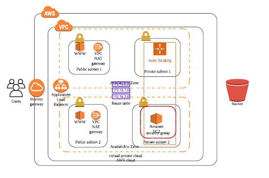
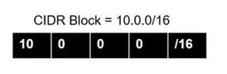
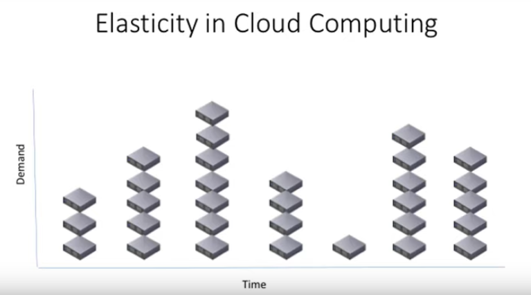
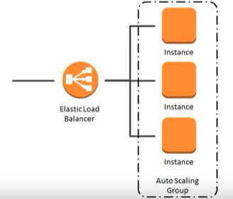
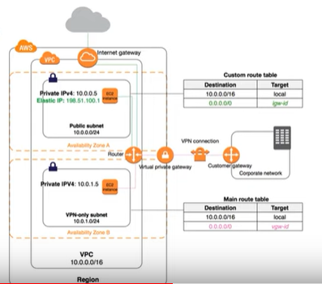

Draw the Architecture with Lucid Chart
The arcchitecture as being thought in the course is as below.

Lucid chart is used to create cloud diagrams. But we can use Visio or Cloudcraft.
Navigate to Lucid Chart to create the diagram.
Then, click Blank Diagram to select a blank template.
Select both AWS Architecture 2017 and AWS Architecture 2019 to get all the necessary figures.
Availability Zones
Availability Zones (AZ) is a set of one or more data centers (physical buildings).
- Choose to have more than one availability zone to avoid a single point of failure.
- Include more than one availability zone to design for high availability.
- You may choose to reduce to one AZ, possibly for prototyping and design for low cost. But it is not recommended for production environments.
Virtual Private Cloud
A virtual private cloud is a pool of networked cloud resources. It can span more than one availability zone.
The equivalent of this would be a data center. However, thanks to availability zones, VPCs can span more than one physical building.
This is an amazing feature that protects against real world disasters like electrical failures, fires and similar events.

Subnets
- Create separation between resources
- Block or allow to/from groups of resources
- Provide services to a specific to a specific set of resources
Keypoints to remember!
- VPCs provide you with private IP addresses for your networking resources.
- Subnets are smaller subsets of your available IP address space
- The /00 at the end is the number of bits, from left to right that are fixed.
- Subnets help with routing and services to specific groups of resources
- Create subnets and VPCs with future expansion in mind!
Public vs Private Subntes
Subnets
- A subnet is a subset of the overall VPC network and it only exists in a single availability zone, unlike its parent network, the VPC.
- A subnet contains resources, and can be assigned access rights that apply to all resources within that subnet.
- Subnets can be public or private. Public subnets are accessible to external users. Private subnets are only accessed internally by other resources within your cloud container.
Use IP addresses for routing traffic
- Use IP addresses as the “keys” for routing traffic. We can route traffic to stay within the VPC, or within a particular subnet, for security reasons.
- For example, a database or any sensitive data will be placed in a private subnet. A public server, like a web server, can be placed in a public subnet. Routing rules applied to a subnet allow us to define access to all resources placed inside that subnet.
IGW Internet Gateway
Software Defined Networking is using APIs and already-existing physical infrastructure to create our own networking layer on top, with our own privacy rules, our own routing and our own Private IP Space.
VPN / Virtual Private Networkis a type of encrypted connectivity that You can setup between your on-premise data center and your Virtual Private Cloud. This allows access in and out of your AWS VPC in a secure manner, across the internet and using internal, Private IP addresses.
DirectConnectis a physical data line that you can purchase directly from AWS or through a telecommunication service provider to access your AWS Cloud without moving your data traffic across the public internet.
Internet Gateway
- An internet gateway is a resource that enables inbound and outbound traffic from the internet to your VPC.
- An internet gateway allows external users access to communicate with parts of your VPC.
- If you create a private VPC for an application that is internal to your company, you will not need an internet gateway.
Network Address Translation
It provides outbound-only internet gateway for private services to access the internet.
This keeps the private service protected from inbound connections, but allows it to connect to the internet in order to perform functions such as downloading software updates. The NAT gateway serves as an intermediary to take a private resource’s request, connect to the internet, and then relay the response back to the private resource without exposing that private resource’s IP address to the public.
Autoscaling groups
It is a coherent group of Virtual Machines (EC2 instances) that allows running the exact number of VMs that are required to meet the demand/specification. The autoscaling group can automatically start or stop the servers (EC2 instances) according to the amount of incoming traffic.
This behavior of the autoscaling group helps in two ways:
- The consumer pays for the only duration of the servers when they were active.
- The consumer doesn't have to worry about horizontal scaling of servers for a sudden peak in incoming traffic.
Best Practice
- It is recommended that an autoscaling group spans more than one availability zone, for reliability.
- f we set the autoscaling group to run one resource, it will run that one resource in one of the availability zones.
- If there is a failure of that resource, the autoscaling group will shut it down in that availability zone and start that same resource in the other availability zone.

Load balancers
- A service designed to distribute work requests meant for a target group
- A Target Group is a collection of servers providing a common service.
- As requests come in, the Load Balancer will spread the requests evenly across its target group.
- Good practice - Assume we have a set of web-servers in private subnet(s). Then, we must have a Load Balancer that would access our web-servers. These web-servers, in turn, would access the backend database.

Security Groups
- Security groups manage traffic at the server level (the resource level). Security Groups aren’t for managing higher-level groups such as subnets, VPC, or user accounts.
- The same security group can be assigned to multiple resources that require the same security access settings defined by that security group.
- A Security Group is a collection of networking rules for inbound and outbound traffic.
Routing Table
- A Set of entries or rules associated with one or more of your subnets inside your VPC
- These rules allow or deny traffic to/from the address ranges that you specify.
- Rules can be as open as the entire world or restricted to a single IP address.

S3
- An S3 bucket is a public service for users to upload or download files
- Place the S3 service outside of your VPC.